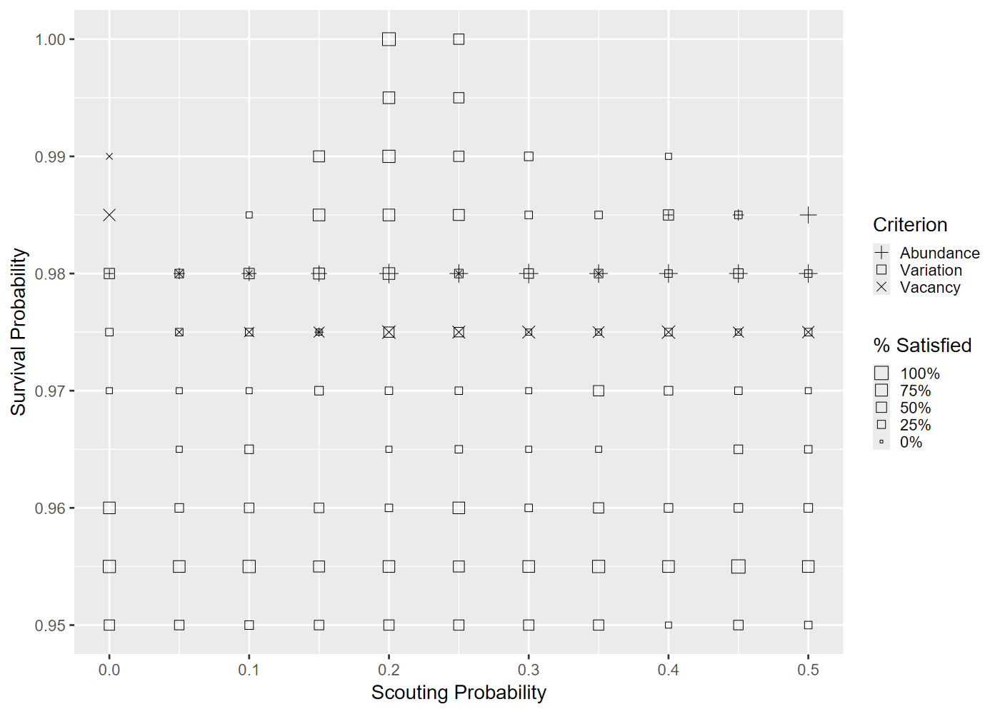
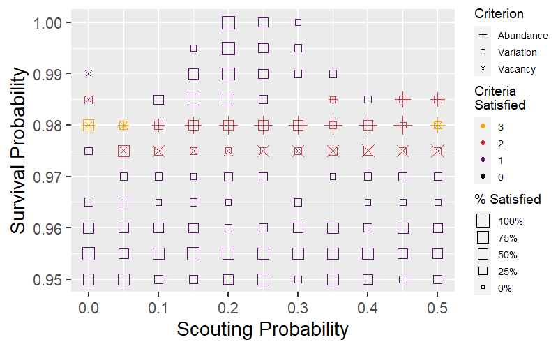
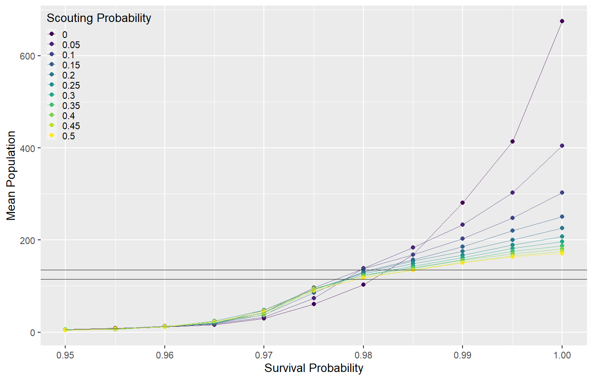
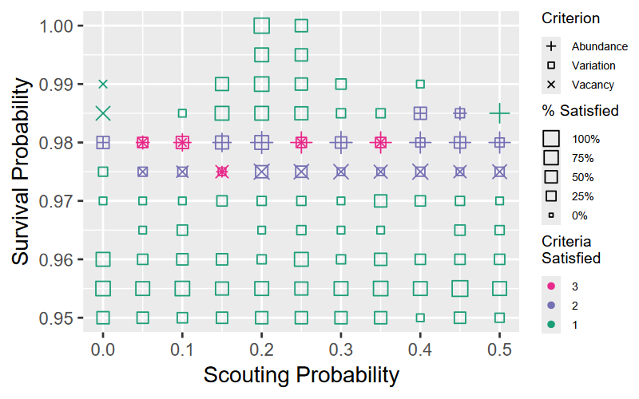
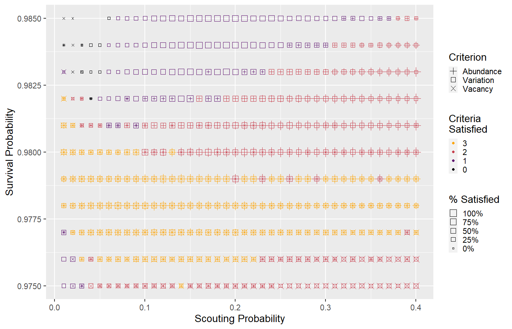
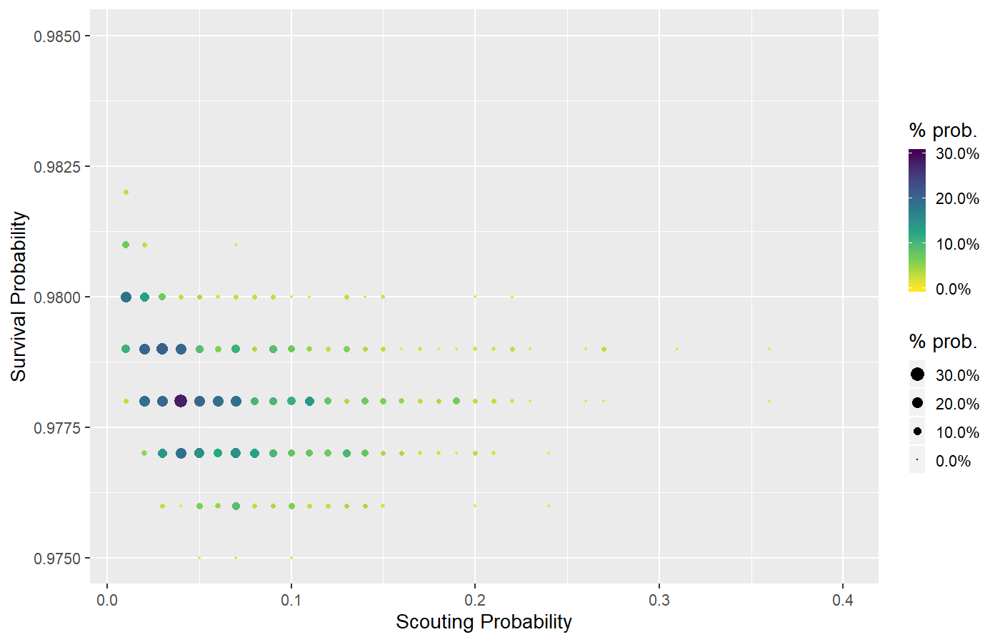

https://ees4760.jgilligan.org/models/class_22/Sect20-5_WoodHoopoes_2ndEd.nlogo
count turtles andcount patches with [(count turtles-here with [is-alpha?]) < 2]scout.prob from 0.0–0.5 by 0.05survival.prob from 0.95–1.00 by 0.005

survival.prob =
0.975–0.985survival.prob =
0.975–0.990

survival.prob ∼
0.975–0.985scout.prob ∼ 0.01–0.40
